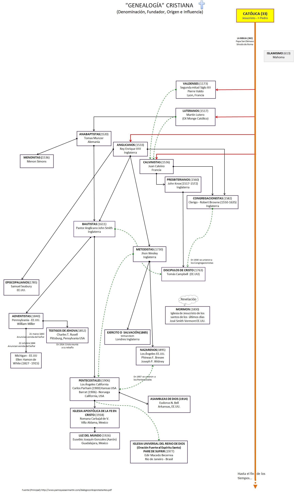

Frase atribuida entre otros al Emperador Romano Julio César, 100 años A.C., que representaría una técnica para generar o alimentar disputas y controversias en un grupo para deteriorar sus relaciones, haciendo difícil o imposible mantener objetivos comunes, por lo tanto, más fácil de controlarlos.
Si relacionamos esta frase con la situación de quienes profesamos una fe (cristiana), por desgracia no estamos completamente unidos, algo nos ha dividido. Muchas personas con opiniones o credos distintos dicen “Como puedo creer en lo que me hablan si ellos mismos no están unidos”, si no mire el siguiente mapa.

A respecto cabe la pregunta, ¿Acaso el sueño de Cristo no se pueda hacer realidad?; tal como menciona la Biblia: Que todos sean uno, como Tú, Padre, estás en mí y yo en ti. Sean también ellos uno en nosotros: así el mundo creerá que Tú me has enviado (Juan 17,21)
A pesar de las divisiones surgidas (especialmente) en los años 1100-1500 (Genealogía adjunto) sigue viva la esperanza del retorno de todos los “cristianos” a la única Iglesia que fundó Jesús.
La verdad tiene que abrirse paso, así está escrito en la Biblia: Yo soy el buen pastor; y conozco mis ovejas, y las mías me conocen a mí, así como el Padre me conoce, y yo conozco al Padre; y pongo mi vida por las ovejas. También tengo otras ovejas que no son de este redil; aquéllas también las llamaré, y oirán mi voz; y habrá un solo rebaño, y un solo pastor. (Juan 10,14-16)---
En el contexto del mensaje, "las otras ovejas" se referiría a todos aquellos que por una u otra razón ha dejado la iglesia primitiva universal (católica). Actualmente siguen abandonando el redil, haciendo caso a los hermanos separados cuando, biblia en mano te dicen "deja tu iglesia y vente para la mía, no te preocupes esa (la Católica) es mala, los curas son pecadores, el Papa es pecador, son idólatras adoran imágenes de barro hecho por el hombre, son borrachos, mujeriegos, etc. etc.".
Con estas actitudes siguen dividiendo la iglesia, aprovechando principalmente de la ignorancia de las personas. Lo curioso es que una vez "convertidos" dicen por fin haber conocido la verdad, asisten con más frecuencia a sus reuniones o cultos, como no lo hicieron antes de "cambiarse". Por esa razón es necesario conocer acerca de los propósitos "ocultos" en las personas que tratan de dividir a la iglesia.
¿Pero cuando se fraccionó? En el siguiente relato del P. Flaviano Amatulli, de su libro titulado "Dialogo con los protestantes” Capítulo I, Origen del protestantismo, describe lo siguiente:
Dialogo con los ProtestantesCuando en una familia hay algún problema, generalmente no se puede establecer claramente quien tiene la culpa y quién no. Casi todos tienen parte de la culpa.
Eso es lo que pasa con la actual división entre los que creen en Cristo. Si nos preguntamos «¿Quiénes tienen la culpa de esta triste situación?». Resulta difícil dar una respuesta tajante: «La Iglesia Católica», «Martín Lutero», «Tal o cual fundador de alguna secta». La respuesta, que tal vez más responda a la realidad puede ser la siguiente: «Todos, mediante nuestros pecados, somos responsables de este desgarramiento del Cuerpo de Cristo, que es la Iglesia».
En efecto, cuando sale de la verdadera Iglesia de Cristo, puede ser por orgullo, por ambición, por ignorancia, por los escándalos recibidos, etc. De hecho, donde hay más pecado o incumplimiento de parte de los católicos se agregan a ellas. Y es precisamente lo que pasó en la grande separación de los cristianos que tuvo lugar con Lutero.
Ambiente de corrupciónAl terminar la Edad Media, la Iglesia Católica se encontraba en una triste situación moral que alcanzaba hasta las más altas jerarquías eclesiásticas. Buscar honores, diversiones y dinero era la aspiración de muchos sacerdotes, obispos, cardenales y papas.
Hubo uno que otro predicador que trató de poner remedio a esta situación, pero sin conseguir ningún resultado importante, hasta que intervino la separación protestante, llamada “Reforma”, que sacudió a la Iglesia, se despertó del largo sueño y la lanzó hacia una renovación general que se llamó “Contrarreforma”.
Rebelión de LuteroLa chispa que dio inicio al incendio fue el permiso, que el Papa León X concedió al Príncipe Alberto de Maguncia (Alemania), de predicar las indulgencias con el objeto de sacar fondos para la construcción de la basílica de san Pedro en Roma (año 1517).
Fray Martín Lutero (1483-15469), sacerdote agustino, se levantó indignado contra los abusos que se cometían en el campo. Publicó 95 proposiciones acerca de la doctrina de las indulgencias, llenas de ataques en contra de la autoridad eclesiástica. Muchos se adhirieron a su posición.
Lutero siguió adelante, afirmando que la iglesia es una sociedad invisible, de la cual puede apartar solamente el pecado y no el castigo de la autoridad eclesiástica. El Papa ordenó que se hiciera un juicio contra Lutero, que fue presidido por el cardenal Cayetano (año 1517).
No obstante que Lutero fuera reconocido culpable, no se pudo proceder contra él, por la protección que gozaba de parte de Federico, príncipe de Sajonia. Esto dio alas a Lutero, que llegó a negar el Primado Pontificio y la infalibilidad de los concilios.
Juan Eck, uno de los más destacados teólogos de la época, polemizó con el agustino rebelde (1519). Pero este no se retractó. Al contrario, radicalizó más su posición, afirmando la igualdad entre sacerdotes y laicos, y la libertad de todo cristiano para interpretar la biblia.
Dirigió sus ataques contra el celibato, las misas de difuntos y la legislación eclesiástica. Negó la misa como sacrificio. Rechazó los sacramentos excepto el bautismo y la cena del Señor, pidió el matrimonio para los sacerdotes y el establecimiento del divorcio. Luchó en contra del culto a la Virgen y los santos, e introdujo el uso de la lengua popular en el culto, rechazando el latín.
En la “Libertad del hombre cristiano”, afirmó que la fe en Jesucristo, que consiste en una ilimitada confianza en su misericordia, no las obras ni los sacramentos, nos da la salvación.
Según Lutero, antes del pecado original. El hombre era libre y sano. Después del pecado, su naturaleza quedó profundamente afectada, sin equilibrio, ni fuerza, ni libertad para resistir frente al mal. Por lo tanto, todos sus actos son manchados por el pecado y son pecaminosos. Solamente una fuerte fe en Cristo lo puede salvar, permitiéndole que sus actos pecaminosos no le sean imputados.
ExcomuniónEl año 1521 el Papa León X excomulgó a Lutero. Para evitar la división del imperio, Carlos V lo invitó a Worms para que aclarara su pensamiento. No hubo ningún resultado favorable. Algunos príncipes alemanes se pusieron del lado de Lutero, para quedarse con los bienes de la Iglesia.
En 1524 los campesinos se levantaron en armas, pidiendo reivindicaciones sociales y económicas. Los ricos, apoyados por Lutero, los vencieron y sometieron con la fuerza. Ni modo. Una vez que dominadores apoyaron a Lutero, era lógico que también Lutero apoyara a ellos, aunque se tratara de algo injusto. Liberándose de la autoridad del Papa, cayó bajo el yugo de los príncipes, para poder sobrevivir.
En 1530 el emperador Carlos V citó a la conferencia de Augsburgo para recomponer la unidad. No tuvo éxito. Al contrario, se formó la Liga Esmalkalda o unión de los ejércitos protestantes para luchar en contra del emperador católico. El año 1546 murió Lutero. Con la Paz de Augsburgo (1555) se aceptó definitivamente el hecho de la división religiosa.
Multiplicación de las divisionesBasándose en el principio de la libre interpretación de la Biblia, pronto empezaron a surgir un sinfín de opiniones diferentes, que dieron origen a otras tantas divisiones.
Thomas Münzer, muerto en 1525, desconociendo la valides del bautismo impartido a los niños, dio origen a los anabaptistas (= rebautizantes) y encabezó el levantamiento de los campesinos (1522-1525), que fue sofocado en la sangre.
Ulrico Zwinglio (1484-1531) negó la presencia de Cristo en la Eucaristía y el sacramento del bautismo. En lo demás aceptó completamente la posición luterana. Sus ideas se impusieron en Zürich,Suiza pero sus partidarios tuvieron que pelear contra los cantones católicos y fueron vencidos en la batalla de Kappel (11 de octubre de 1531), en la que fue mortalmente herido.
En el año 1532, Calvino fundó un grupo aparte en Ginebra (Suiza), aceptando del luteranismo y desarrollando las doctrinas de la predestinación.
Juan Knox en 1560 fundó en Escocia el presbiterianismo, aceptando las posiciones calvinistas.
Enrique VIII, rey de Inglaterra del 1509 al 1547, no consiguiendo del Papa la anulación del matrimonio con Catalina de Aragón, proclamó la independencia de la Iglesia Anglicana (1534), declarándose como su jefe espiritual.
Una vez rota la unidad con la única iglesia que fundó Cristo, cada uno, por interés, orgullo o buena intención, se sentía libre de seguir «su» camino, dando origen a un sinfín de divisiones, que hasta la fecha siguen surgiendo y desapareciendo. Y todo naturalmente está en contra de la unidad querida por Cristo. Así es cuando el pecado se apodera de las mentes y corazón. Cada cual ve las cosas como quiere, olvidándose de la expresa voluntad de Cristo, aunque proclama con los labios de ser su discípulo.
El escándalo de la cristiandadLos mismos fundadores del protestantismo estaban conscientes del escándalo representado por el problema de las divisiones. En una carta dirigida a Philip Melanchthon (1497-1560), así se expresaba el mismo Calvino:
«Es de gran importancia que las divisiones que subsisten entre nosotros no sean conocidas en los futuros tiempos. Nada puede ser más ridículo que el hecho de que quienes fueron impulsados a separarse de la totalidad, no hayan podido lograr sino un tan precario acuerdo en el principio mismo de la Reforma. » (P. Flaviano Amatulli Valente QEPD)